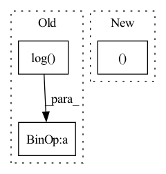

Pattern ID :1694
Before Change
rel_pos = rearrange(grid, "i c -> i 1 c") - rearrange(grid, "j c -> 1 j c")
if self.log_dist:
rel_pos = torch.sign(rel_pos) * torch.log( rel_pos.abs() + 1)
self.register_buffer("rel_pos", rel_pos, persistent = False)
rel_pos = self.rel_pos.float()After Change
// calculate strides
strides = torch.flip(rel_pos_shape, (0,)).cumprod(dim = -1)
strides = torch.flip(F.pad(strides, (1, -1 ), value = 1), (0,))
// get all positions and calculate all the relative distances
In pattern: SUPERPATTERN
Frequency: 4
Non-data size: 3
Instances Fragment ID: 6716102
Project Name: lucidrains/make-a-video-pytorch
Commit Name: b6e0a17c5488b923d884272f7e46170352b0f0d5
Time: 2023-03-18
Author: lucidrains@gmail.com
File Name: make_a_video_pytorch/make_a_video.py
M Class Name: ContinuousPositionBias
N Class Name: ContinuousPositionBias
M Method Name: forward(1)
N Method Name: forward(1)
M Parent Class: nn.Module
N Parent Class: nn.Module
M File Name: make_a_video_pytorch/make_a_video.py
N File Name: make_a_video_pytorch/make_a_video.py
M Start Line: 110
M End Line: 126
N Start Line: 105
N End Line: 142
Before Change
action = a_distribution.rsample()
logp_pi = a_distribution.log_prob(action).sum(axis=-1)
logp_pi -= (2 * (np.log( 2) - action - F.softplus(-2 * action))).sum(axis=1)
logp_pi = torch.unsqueeze(logp_pi, dim=1)
action = self.max_action * torch.tanh(action)After Change
return a_distribution, a_tanh_mode
def forward(self, state):
a_dist, a_tanh_mode = self._get_outputs(state)
action = a_dist.rsample()
logp_pi = a_dist.log_prob(action).sum(axis=-1)
return action, logp_pi, a_tanh_mode Fragment ID: 6716087
Project Name: ryanxhr/dwbc
Commit Name: b3791e408af7125fde12cda1cdeaefbaa400aacc
Time: 2022-06-30
Author: xuhaoran8@jd.com
File Name: algos/DWBC.py
M Class Name: Actor
N Class Name: Actor
M Method Name: forward(2)
N Method Name: forward(2)
M Parent Class: nn.Module
N Parent Class: nn.Module
M File Name: algos/DWBC.py
N File Name: algos/DWBC.py
M Start Line: 35
M End Line: 52
N Start Line: 51
N End Line: 54
Before Change
audio_mask = (torch.arange(audio.shape[1], device=audio.device)[None, :, None] < audio_len[:, None, None]).float()
x = torch.exp(audio - 1e-6) * audio_mask
y = torch.cat([x[1:], x[:1]])
return torch.log( 0.9 * x + 0.1 * y + 1e-6) * audio_mask, audio_len
return audio, audio_len
After Change
assert len(audio.shape) == 3
if self.do_timestretch and random.random() < AUGUMENT_RATE:
audio, audio_len = self.timestretch(audio, audio_len)
if random.random() < AUGUMENT_RATE:
audio = self.pitchshift(audio)
if random.random() < AUGUMENT_RATE: Fragment ID: 6716094
Project Name: kaiidams/voice100
Commit Name: dfe0234fcc858357cb2a91bcba1da06792eabab7
Time: 2021-06-25
Author: katsuya.iida@gmail.com
File Name: voice100/audio.py
M Class Name: BatchSpectrogramAugumentation
N Class Name: BatchSpectrogramAugumentation
M Method Name: forward(3)
N Method Name: forward(3)
M Parent Class: nn.Module
N Parent Class: nn.Module
M File Name: voice100/audio.py
N File Name: voice100/audio.py
M Start Line: 73
M End Line: 78
N Start Line: 80
N End Line: 95
Before Change
// compute scoring gt and loss
score_gt = F.softmax(-distance_metric(pred_dict["traj"], gt_dict["y"])/self.temper, dim=-1)
score_loss = torch.sum(torch.mul(- torch.log(pred_dict["score"]) , score_gt))
loss += self.lambda3 * score_loss
loss_dict = {"tar_cls_loss": cls_loss, "tar_offset_loss": offset_loss, "traj_loss": reg_loss, "score_loss": score_loss}After Change
pred_dict["target_prob"], gt_dict["target_prob"].float(), reduction="none")
gt_idx = gt_dict["target_prob"].nonzero()
offset = pred_dict["offset"][gt_idx[:, 0], gt_idx[:, 1] ]
// cls_loss, indices = torch.topk(cls_loss, self.m, dim=1) // largest 50
cls_loss = cls_loss.sum() Fragment ID: 6716090
Project Name: henry1iu/tnt-trajectory-predition
Commit Name: 3407448e60091157b38747900b5a0131660c974c
Time: 2022-03-21
Author: liu.jb.henry@gmail.com
File Name: core/loss.py
M Class Name: TNTLoss
N Class Name: TNTLoss
M Method Name: forward(5)
N Method Name: forward(5)
M Parent Class: nn.Module
N Parent Class: nn.Module
M File Name: core/loss.py
N File Name: core/loss.py
M Start Line: 97
M End Line: 117
N Start Line: 109
N End Line: 128